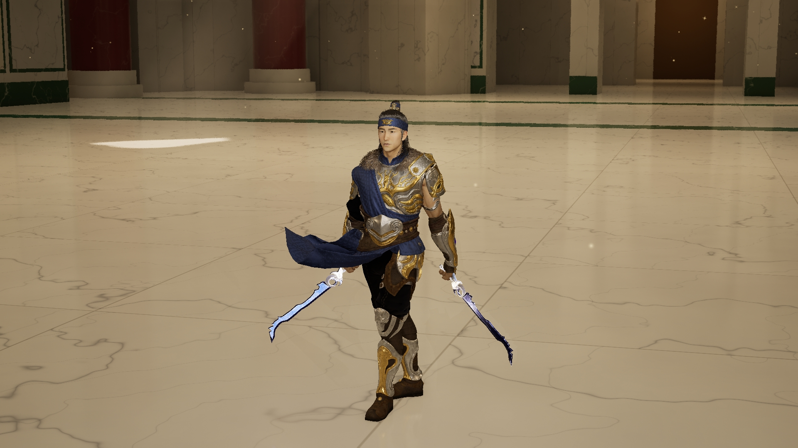

LIGHTBLADE · ORIGINAL OUTFIT RESTORED
恢复最早的原版衣服。
使用最早的蓝色衣料与金属护具，保留原来的亚洲男性脸型、头发、蓝色晶刃双剑和敏捷双持招式。Assassin 新衣服退出当前方案，完整保留作以后备用。
原版服装与已选蓝剑
这里重新展示此前保留的原版 UE 实拍，没有将旧片标为新拍战斗。
原版服装全身

Assassin 服装 · 归档备用
这套衣服与当前脸型不匹配，停止作为 Lightblade 推荐。模型、原贴图、骨架适配、试穿视频和源 ZIP 均保留，以后其他角色需要时再使用。